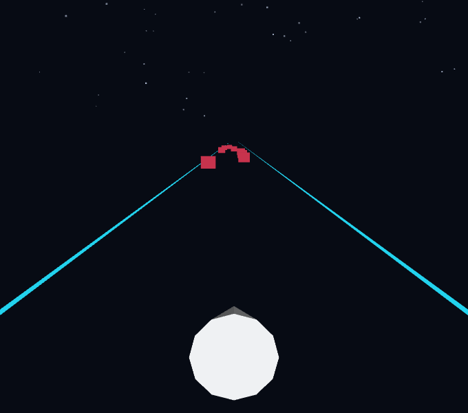
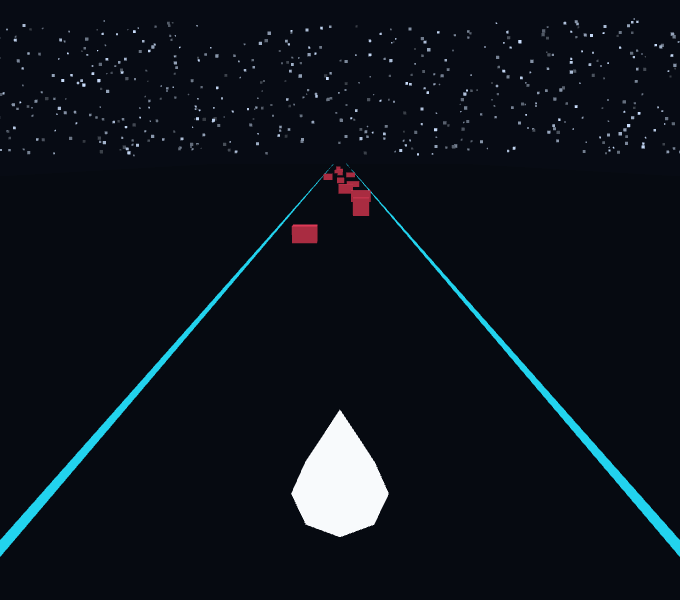
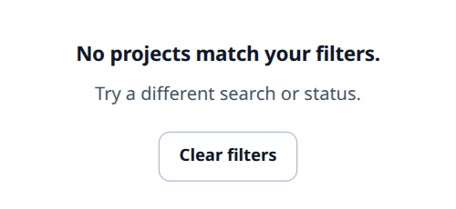
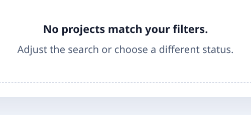

Orbit Runner
The game brief called for a low-poly cone, cyan rails and a starfield. Both versions use a cone mesh. In play, the ship without Jevstice looks disc-like; the ship with it has a pointed silhouette.


Both runs finished within the 15-minute cap. In Chromium, both games rendered with WebGL, redrew the scene and advanced the score. Steering and restart were not independently verified.
Each image crops the same 680 × 600 pixel region from a desktop screenshot taken just after play started.
Orbit Projects
Both dashboards passed 26 of 26 Chromium checks, including filtering, form validation, keyboard focus and persistence. The run with Jevstice reached the five-minute cap and emitted no final summary.


When a search returned no matches, the baseline offered a dedicated Clear filters button. The version with Jevstice offered instructions instead. It did add a labelled close button to the New project dialog; both dialogs supported Cancel and Escape.